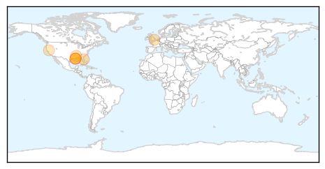
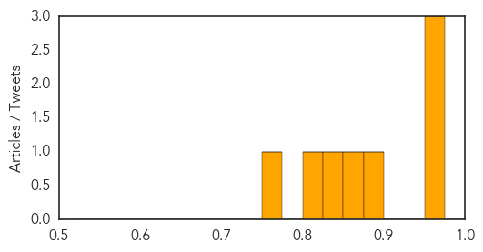

Toggle navigation
Early Warning
Daily Alerts
West Nile Virus
Sep 18, 2014
Compare to:
-
Dengue Fever
Hemmorhagic Fever
Mold/Fungal Infection
Influenza
Meningitis
Pertussis / Whooping Cough
Middle East Respiratory Syndrome
Cholera
Hepatitis
Chikungunya
Yellow Fever
Bubonic Plague
Swine Flu
Ebola
Measles
Unknown
Mumps
30 Day Trends
Web: 0
alerts
, 0
warnings
Twitter: 1
alerts
, 0
warnings
Top Articles:
0.974
Lafourche resident dies from West Nile virus
0.972
Larose resident believed to have died from West Nile
0.960
Human West Nile Virus case now confirmed in Volusia
0.877
WAFB 9 News Baton Rouge, Louisiana News, Weather, Sports
0.859
The deadly mosquitoes hitching a ride to Britain on the wheels of lorries coming through the Channel Tunnel
0.825
West Nile virus blamed for Lee County death
0.801
Mosquitoes like it hot
0.753
Stamford man tests positive for West Nile
Top Tweets:
No tweets found for Sep 18, 2014
Web/News Articles
Tweets
Article Locations

Article Confidences
